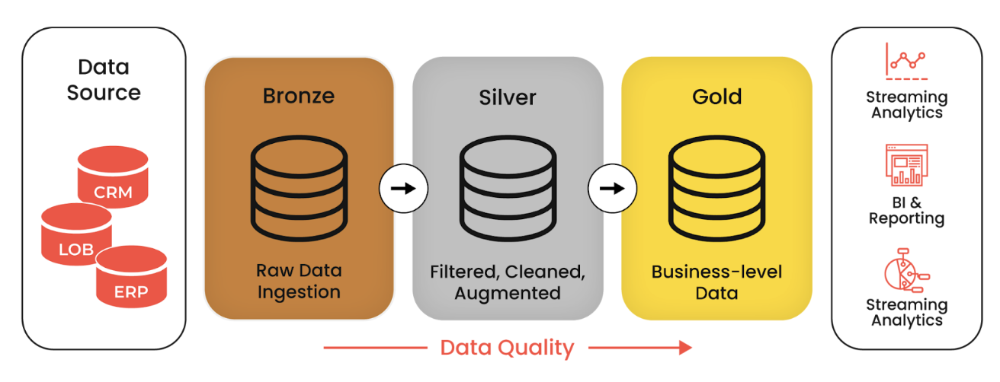
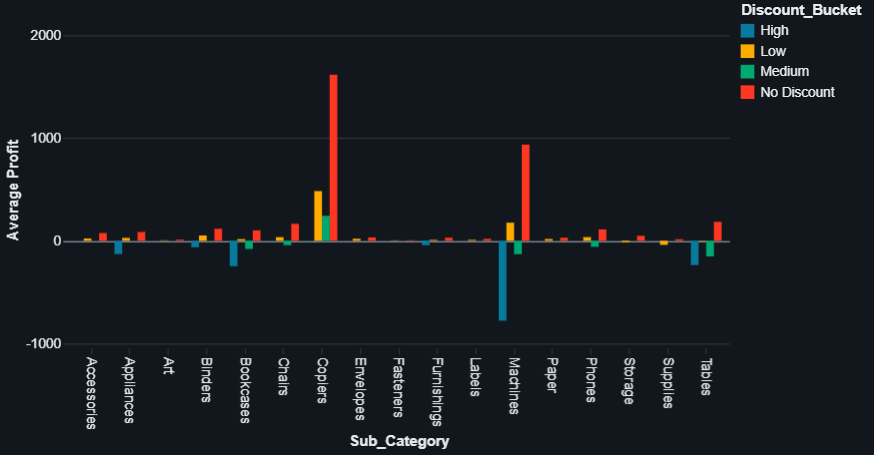
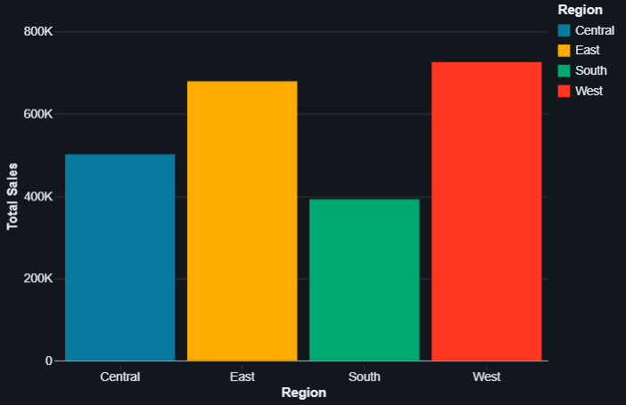
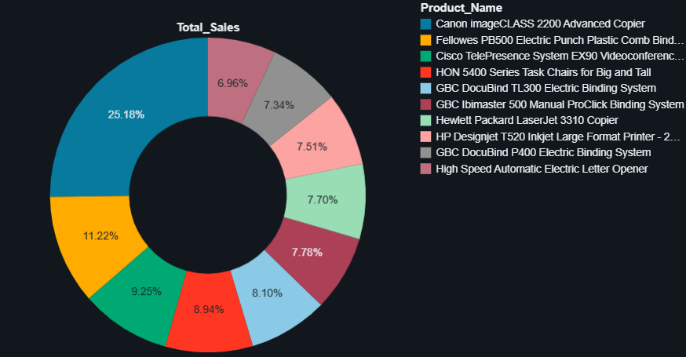
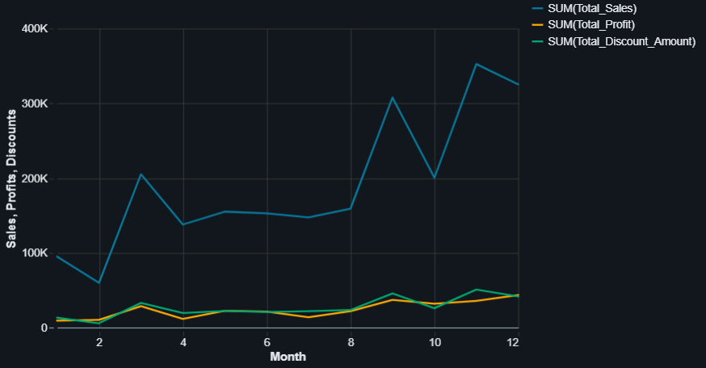
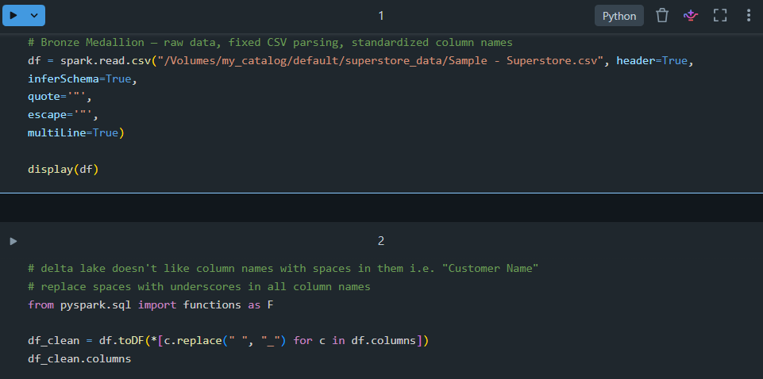
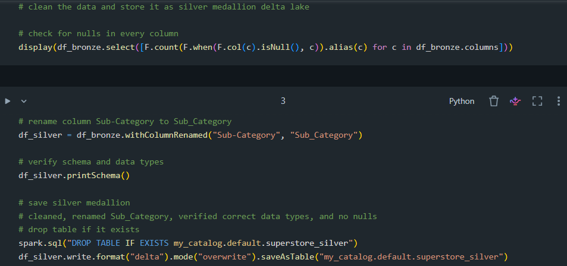
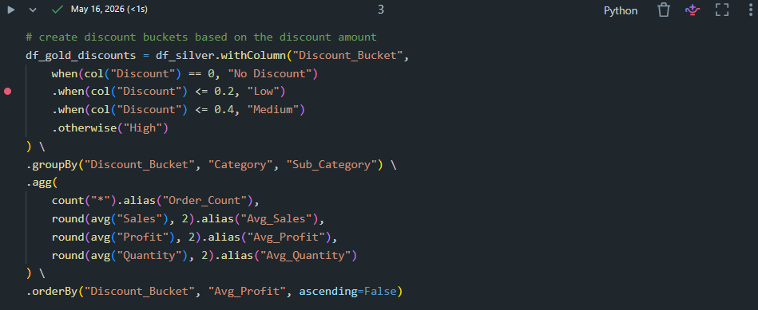
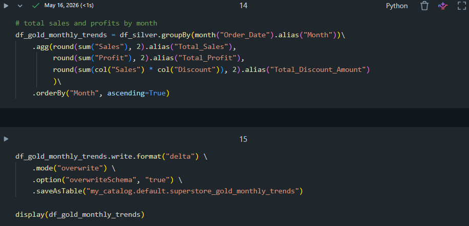

Superstore Sales Analysis — Databricks
Overview
End‑to‑end data pipeline and analytics project built on Databricks using Delta Lake, PySpark, and Unity Catalog. This project demonstrates a full medallion architecture (Bronze → Silver → Gold) and delivers actionable business insights from the Superstore dataset.Architecture
Bronze → Silver → Gold medallion pipeline implemented in Databricks.

Tools & Technologies
- Databricks (Community Edition)
- Delta Lake
- PySpark
- Unity Catalog
- Databricks SQL
Dataset
Key Findings
High discounts universally result in net profit losses

West leads all regions in Sales and Profit

Canon imageCLASS Copier accounts for 50% of top 10 product profit

November discounting is less efficient than December despite higher sales

What I Learned
This project strengthened my ability to design and operate a full medallion architecture inside Databricks. I gained hands-on experience building reliable ingestion pipelines, enforcing schema consistency with Delta Lake, and using PySpark to transform large datasets efficiently. I also deepened my understanding of how business metrics emerge from clean, well-modeled data — and how to communicate those insights visually.
- Building scalable Bronze → Silver → Gold pipelines using Delta Lake
- Managing schemas, constraints, and versioning with Delta Lake features
- Writing optimized PySpark transformations for large datasets
- Using Unity Catalog for governance and table lineage
- Designing Databricks SQL queries for business-ready metrics
- Creating visualizations that tie technical work to business outcomes
Key Skills Demonstrated
- Data Engineering: Medallion architecture, ETL orchestration, Delta Lake optimization
- PySpark: Transformations, aggregations, window functions, performance tuning
- Data Modeling: Clean dimensional structures for Sales, Profit, and Product metrics
- SQL Analytics: KPI creation, trend analysis, regional performance comparisons
- Visualization: Clear, business-focused charts for decision-making
- Reproducibility: Modular notebooks that run end-to-end
Notebook Screenshots
Below are selected screenshots from my Databricks notebooks showing ingestion, transformations, and gold-layer metric creation.
Bronze Layer — Ingestion

Silver Layer — Cleaning & Transformations

Gold Layer — Business Metrics


Notebook Workflow
- 01_bronze — Data ingestion and raw storage
- 02_silver — Data cleaning and transformation
- 03_gold — Business metric aggregations
- 04_insights — Visualizations and recommendations
All notebooks can be run end‑to‑end to reproduce the pipeline and insights. Dataset available on Kaggle.